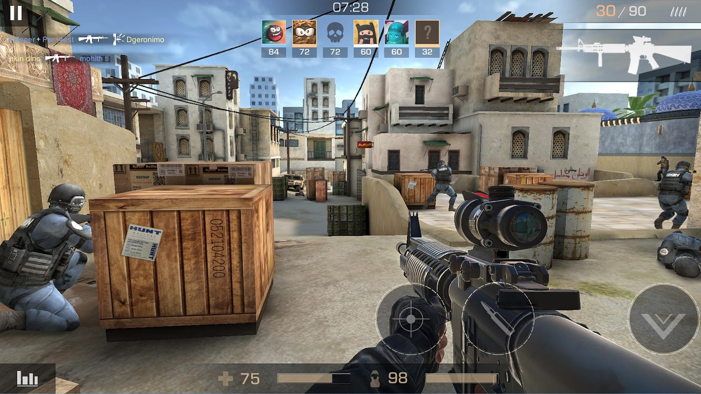

Перейти на другую страницу
Навигация по странице
- Про игру
- Элементы
- Видео
Standoff 2
Standoff 2 представляет собой классический шутер от первого лица с различными режимами игры и арсеналом разного оружия. Каждое оружие обладает различным набором характеристик, ограничивающих тактические возможности игрока: пробиваемость брони, отдача, темп стрельбы, цена, награда за убийство, боезапас[5]. На начальных этапах игры доступны различные режимы игры, такие как закладка бомбы, командный бой, эскалация (в настоящее время доступно как временный режим в определенное время) и другие. Когда игрок достигнет пятнадцатого уровня, ему откроется режим «Союзники», матчи в котором проходят в формате 2х2, а при достижении двадцатого — соревновательный[6] В отличие от большинства мобильных шутеров, в Standoff 2 отсутствует автострельба и помощь в наведении, но в то же время есть и гибкая настройка управления: возможность перемещать, изменять видимость и размеры большей части элементов интерфейса. За реальные деньги в игре продаются только декоративные предметы, не влияющие на игровой процесс[7]. Критика и популярность Критики неоднократно сравнивают игру Standoff 2 с Counter-Strike: Global Offensive и называют её мобильным клоном[2][3][6]. Сушант Рохан Сингх из PCQuest назвал игру самой лучшей из всех адаптаций CS:GO для мобильных устройств и идеальной игрой в жанре FPS, а также оценил, прежде всего, хорошую частоту кадров, приятный игровой процесс, скины и сильную защиту от читеров и хакеров. Сушант отметил, что, возможно, игра недостаточно оптимизирована, так как на некоторых телефонах наблюдаются задержки в работе приложения, но это явление характерно, по его мнению, для любой многопользовательской мобильной игры, или зависание связано с тем, что Standoff 2 не предназначена для работы на платформе MediaTek[2]. В третьем квартале 2021 года Standoff 2 вошёл в тройку самых доходных на российском рынке игр[8]. 1 августа 2024 портал Stream Hatchet поделился статистикой просмотров мобильных игр на видеостриминговых сервисах. Согласно данным сайта за первое полугодие 2024 года Standoff 2 смотрели на протяжении 10,7 миллионов часов. Игра замкнула топ-10 дисциплин, уступив Mobile Legends: Bang Bang, PUBG Mobile, Garena Free Fire и другим[9].
Characteristics
| Человек | |
| теры | спецы |
| Возраст | Неопределён |
Видео
Обратно к навигации